Si és la primera vegada, llegeix la Guia ràpida i el Glossari: en 5 minuts estaràs volant amb la Nova. Després, el manual recorre el programa secció per secció, en el mateix ordre que el seu menú, amb captures reals. També el tens dins de NOVA AI: el botó 📖 Consulta el Manual.
Les frases que pots dir a la Nova es veuen així: «Nova, baixa el tren d'aterratge». Les tecles, així: Insert. Els botons i les seccions del programa van en negreta, i les rutes de carpetes en format de codi.
Cinc passos i ja podràs parlar amb la Nova a Star Citizen. La resta la descobriràs sobre la marxa.
Obre NOVA AI Setup.exe i prem INSTAL·LAR. Triga uns minuts i crea la drecera NOVA AI a l'escriptori. (Secció 02)
La primera vegada et pregunta el teu nom, com la vols anomenar i com et sent pel micròfon. Només has de respondre. (Secció 03)
Perquè pugui conversar, enganxa una clau gratuïta de Gemini o de Groq a Nova › Intel·ligència. Són 2 minuts. (Secció 11)
A Star Citizen: Options › Graphics › Window mode › Borderless. Així el logo i els hologrames de la Nova es veuen per sobre del joc.
Mantén premuda la teva tecla (Insert de fàbrica) i parla, o digues el seu nom: «Nova, baixa el tren d'aterratge». Minimitza la finestra de NOVA mentre jugues, o tanca-la: continua a la safata de Windows.
| Digues… | I la Nova… |
|---|---|
| «Nova, baixa el tren d'aterratge» | Prem les tecles del teu joc (tren, escuts, quàntic, llums…). |
| «Què és la Laranite?» | T'ho diu a l'instant des del seu Diccionari de consultes. |
| «Parla'm de Daymar» | Fitxa del planeta, amb holograma per sobre del joc. |
| «Busca'm un jugador» | Et demana el handle i et mostra la seva fitxa de RSI (i, si li dius «sí», la publica al teu Discord). |
| «Quina ruta paga més amb 100.000 aUEC?» | Calcula la millor ruta comercial per a la teva bodega. |
| «Recorda-m'ho d'aquí a 3 hores, la refineria» | Posa un temporitzador que t'avisa encara que tanquis NOVA. |
| «Envia un missatge al xat: algú necessita escorta?» | El tradueix si cal i l'escriu al xat del joc. |
| «On puc comprar un P4-AR?» | T'ho diu, o t'obre el cercador d'objectes de la comunitat. |
| «Nova, atura't» · «Nova, activa't» | L'atura (cancel·lant el que estigui buscant) i la torna a activar. |
| «Qui ets?» · «Què saps fer?» | Es presenta (amb una anècdota sobre el seu creador) i t'explica tot el que sap fer. |
| «Obre el manual» | Obre aquest manual al navegador. |
| Paraula | Què vol dir |
|---|---|
| Cabina | La pantalla principal de NOVA: el que dius, el que et respon i els avisos del joc. |
| Overlay | El logo de la Nova, dibuixat per sobre del joc, que canvia de color segons el que fa. |
| Holograma | Una fitxa (jugador, planeta, lloc) que apareix uns segons per sobre del joc. |
| Finestra sense vores | «Borderless»: un mode de pantalla de Star Citizen que permet veure l'overlay i els hologrames. |
| Tecla per parlar | La tecla que mantens premuda mentre li parles (com una ràdio). Insert de fàbrica. |
| Game.log | Un fitxer que escriu el mateix joc amb el que passa a la teva sessió. La Nova el llegeix per mantenir-te informat. |
| global.ini | El fitxer amb tots els textos del joc (en el teu idioma si tens una traducció). La Nova el fa servir per entendre els avisos i omplir el seu diccionari. |
| Bitàcola | El diari que la Nova escriu de cada sessió de joc: on has estat, combats, contractes… |
| Diccionari de consultes | La «memòria física» de la Nova: un fitxer de text amb milers de definicions del joc. Respon des d'aquí sense gastar IA. |
| Clau d'IA (API key) | Un codi gratuït de Google, Groq i altres perquè la Nova pugui parlar amb la seva intel·ligència artificial. |
| Quota o tokens | El que «gasta» cada pregunta a la IA. Les claus gratuïtes tenen un límit diari; la Nova procura estalviar. |
| Handle | L'àlies d'un jugador a la web de RSI (robertsspaceindustries.com). |
| Webhook de Discord | Una adreça del teu canal de Discord on la Nova pot publicar fitxes. |
NOVA AI és la teva intel·ligència artificial de bord: la crides pel seu nom o amb una tecla, et respon amb veu natural, prem les tecles del joc per tu i sempre sap què passa a la teva sessió. Tot el que fa servir és gratuït.
Mantén premuda una tecla, un botó del ratolí o del HOTAS, o simplement digues el seu nom: «Nova, …».
Baixa el tren, demana plataforma d'aterratge, aixeca escuts o salta al quàntic prement les tecles del teu joc.
Lore, naus, mineria, plànols de fabricació, missions i preus, amb dades del pegat actual.
Llegeix el Game.log: sap on ets, qui puja a la teva nau, contractes, ATC i combats.
Registra cada sessió (lloc, nau, morts, baixes, curacions…) i recorda el que li expliques.
Instal·la la traducció de la comunitat del joc en el teu idioma amb un sol clic.
El seu logo canvia de color en una cantonada, i apareixen fitxes de jugadors, objectius, planetes i llocs.
La seva fitxa pública de RSI i la de la seva organització, a la pantalla, a la bitàcola i al teu canal de Discord.
«Envia un missatge al xat…»: el tradueix si cal i l'escriu per tu al xat del joc.
La seva memòria física: milers de definicions sense gastar IA, i aprèn sola el que no sap.
Refinatge i contractes amb avís per veu; rutes comercials amb el benefici real per a la teva bodega.
En arrencar i en sortir mira a GitHub si hi ha una versió nova i et pregunta si la vols instal·lar.
| Requisit | Detalls |
|---|---|
| Windows 10 o 11 | De 64 bits. L'instal·lador fa servir components que Windows ja porta. |
| Micròfon | Qualsevol serveix. Amb auriculars, la Nova no se sent a si mateixa pels altaveus. |
| Connexió a internet | Per a la IA, les veus neuronals i les dades del joc. Les ordres de tecles funcionen sense connexió. |
| Python | No el necessites: si falta, l'instal·lador descarrega Python 3.12 només per a la Nova. |
| Targeta NVIDIA (opcional) | Accelera el reconeixement de veu local (Whisper). Sense targeta, es fa servir el processador o el núvol. |
| Claus d'IA | Gratuïtes i en 2 minuts (secció 11). Des de la 2.1.5 cada pilot posa les seves: NOVA ja no porta claus de sèrie. |
Un sol fitxer, NOVA AI Setup.exe, ho instal·la tot en uns minuts: el programa, Python si cal, les veus i les dreceres.
Fes doble clic a NOVA AI Setup.exe (la icona amb la fletxa). Windows et demanarà permís d'administrador perquè s'instal·la a C:\Program Files\NOVA AI: prem Sí.
Primer apareix l'idioma (español, English, català, français o Deutsch; ve preseleccionat el del teu Windows). Després, les Normes d'ús i la Política de privacitat en aquest idioma. Llegeix-les, marca «He llegit i accepto» i prem ACCEPTAR I CONTINUAR. Si no les acceptes, no s'instal·la res.
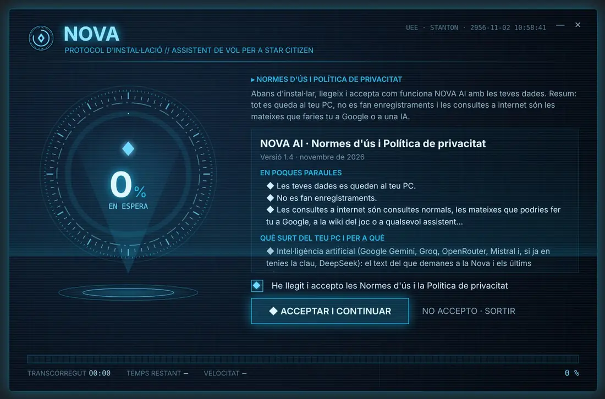
NORMAS_Y_PRIVACIDAD.ca.md.L'instal·lador comprova Python, la teva targeta gràfica, l'espai lliure i la connexió. A ▸ CARPETA D'INSTAL·LACIÓ veus on s'instal·larà i l'espai lliure d'aquella unitat: amb TRIA CARPETA… la canvies a una altra carpeta o unitat (per exemple D:\Jocs\NOVA AI). Tria també les opcions: acceleració NVIDIA, veu sense internet (Piper), drecera a l'escriptori i obrir la Nova en acabar. Després prem ◆ INICIAR SEQÜÈNCIA D'INSTAL·LACIÓ.
En actualitzar, NOVA AI es queda a la carpeta on ja era; per moure-la a una altra, desinstal·la-la primer (les teves dades es conserven).
Veuràs cada pas amb el seu estat, el percentatge, la velocitat de descàrrega i el temps restant. Si alguna cosa falla, apareixen els botons Tornar-ho a provar i Veure registre.
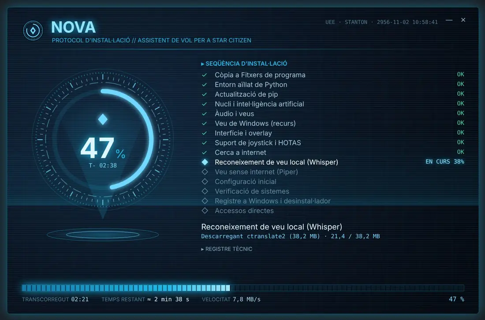
Quan acabi tindràs la drecera NOVA AI a l'escriptori i al menú Inici. La primera vegada que l'obris començarà la configuració inicial (secció 03).
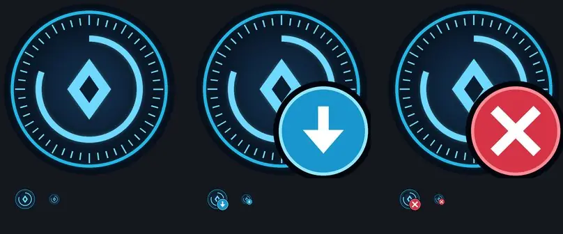
C:\Program Files\NOVA AI o la carpeta que vas triar.%LOCALAPPDATA%\NOVA AI\datosEn arrencar i en sortir, NOVA mira a GitHub (github.com/0zzyt0/NOVA-AI) si hi ha una versió nova. Si n'hi ha, t'avisa a la pantalla i en veu alta:
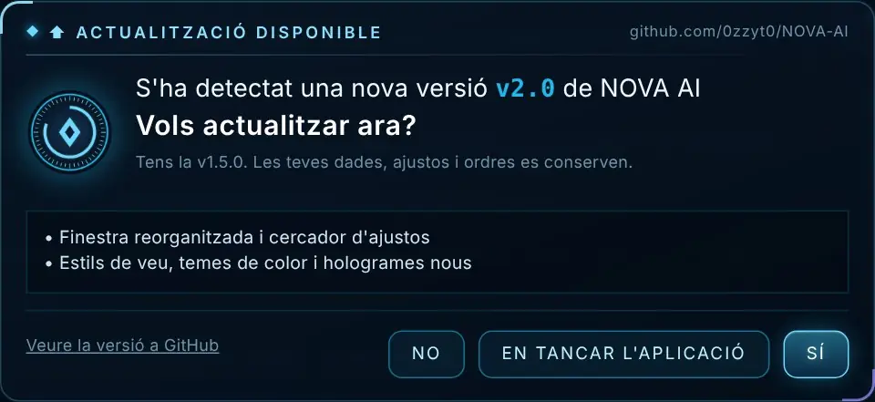
També pots respondre en veu: «sí», «no» o «en tancar». Si no respons i tanques NOVA, t'ho pregunta en una finestra en sortir. Les teves dades, ajustos i ordres sempre es conserven. Si ja havies acceptat les normes d'aquella versió, l'instal·lador no te les torna a demanar.
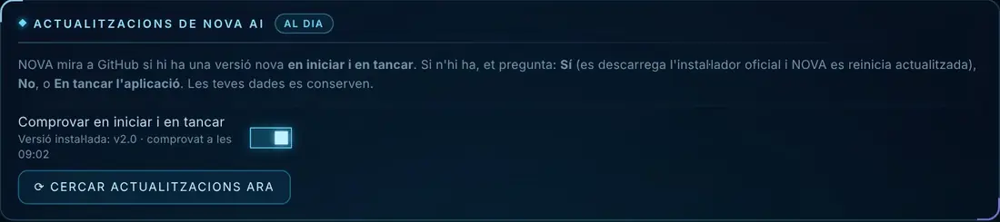
La primera vegada, la Nova obre un assistent de 7 passos. Pots respondre parlant (botó del micròfon) o escrivint. Cada resposta es marca amb un ✓ verd si t'ha entès; si surt una ✕ vermella, torna-ho a dir.
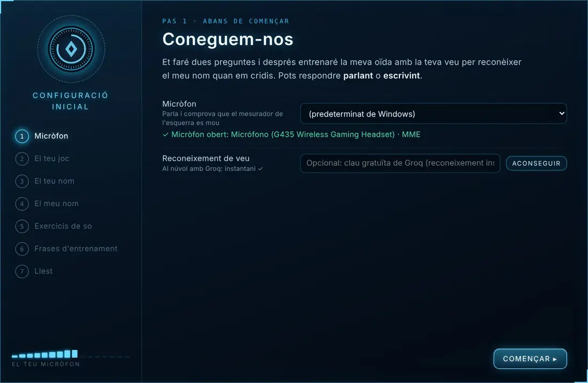
Tria el teu micròfon i parla: el mesurador de l'esquerra s'ha de moure. Enganxa aquí la teva clau de Groq si en tens (secció 11); és opcional.
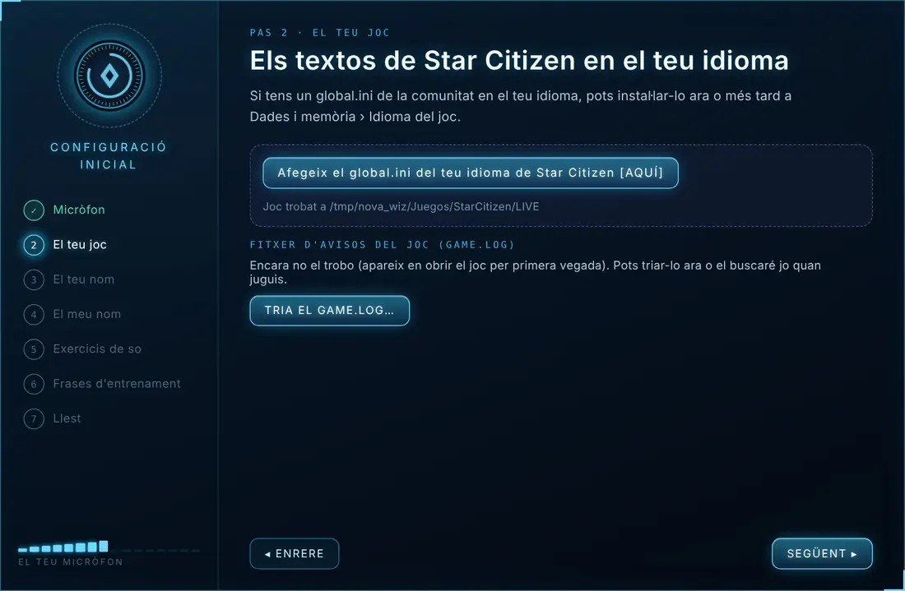
La Nova busca la carpeta LIVE de Star Citizen i el seu idioma. Si el joc no està en el teu idioma, pots instal·lar la traducció de la comunitat més endavant des de Dades i memòria › Idioma del joc (secció 09).
No troba el joc? Prem Triar carpeta i assenyala la teva carpeta StarCitizen.
A sota veuràs el fitxer d'avisos del joc (Game.log): on l'ha trobat o, si jugues des d'una altra carpeta, TRIA EL GAME.LOG…. Si encara no existeix (apareix en obrir el joc per primera vegada), la Nova el buscarà sola quan juguis.

En castellà, amb Sí, descarrega-la i instal·la-la descarrega la traducció de 0zzyt0, la copia a LIVE i posa el teu user.cfg en castellà (les veus del joc continuen en anglès). Abans en desa una còpia: user.cfg.nova_copia.
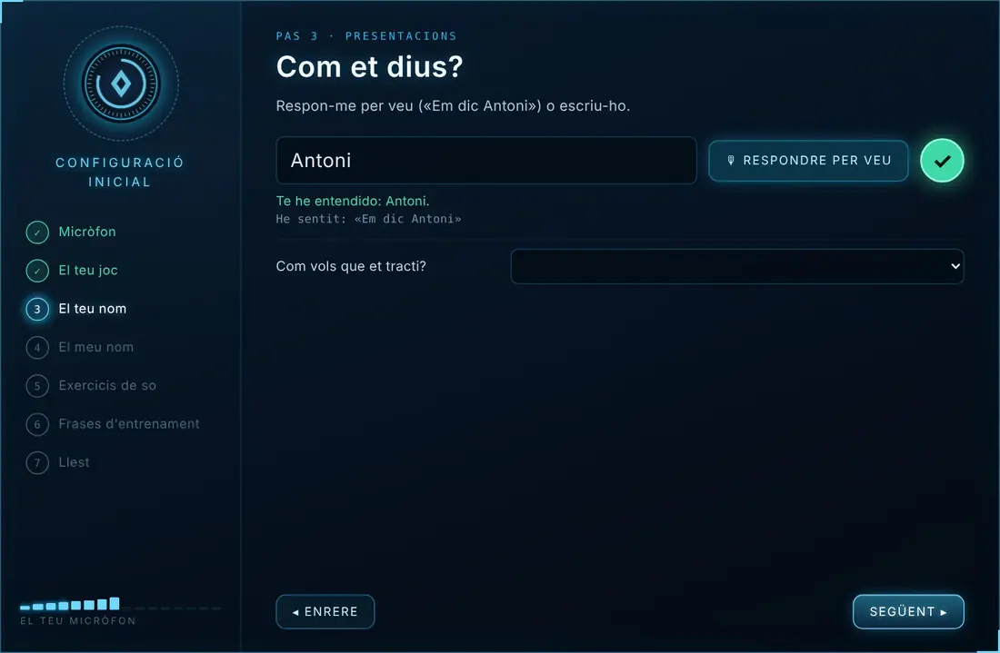
Digues «Em dic Antoni» o escriu-ho, i tria com vols que et tracti: senyor, capità, pel teu nom…
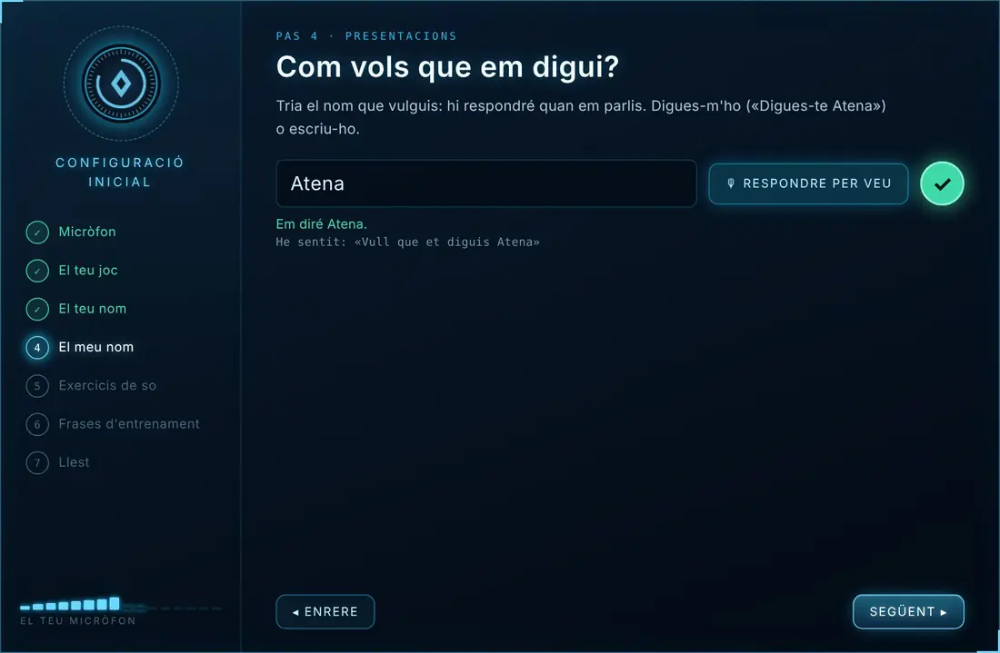
El nom que vulguis: Nova, Atena, Jarvis… T'avisa si és massa curt o una paraula comuna, perquè es despertaria sense voler. Dues o tres síl·labes són el millor.
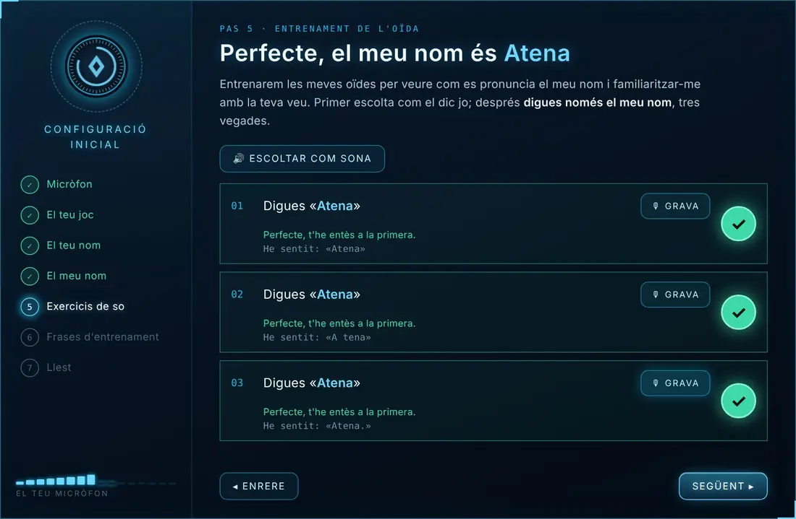
Prem Escoltar com sona i després digues només el seu nom tres vegades. Si el reconeixement de veu l'escriu diferent («A tena» en lloc d'«Atena»), la Nova ho aprèn.
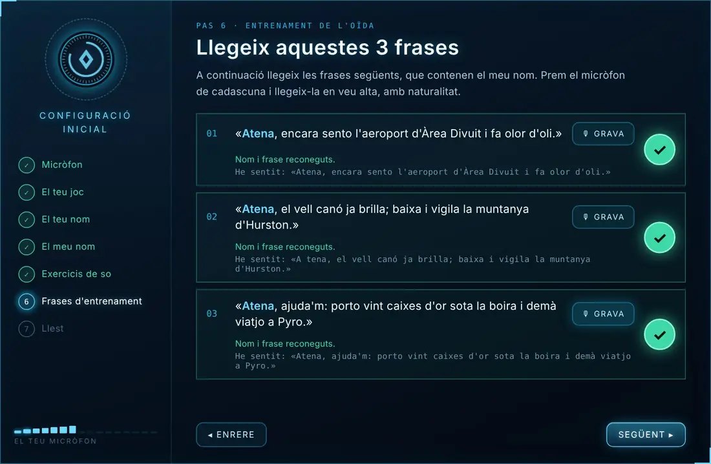
Llegeix en veu alta 3 frases de Star Citizen que comencen pel seu nom. Surten a l'atzar: una amb moltes vocals seguides (per captar la teva vocalització), una altra amb consonants difícils i una altra que barreja les dues coses. Així ajusta la sensibilitat a la teva veu i al soroll de la teva habitació.
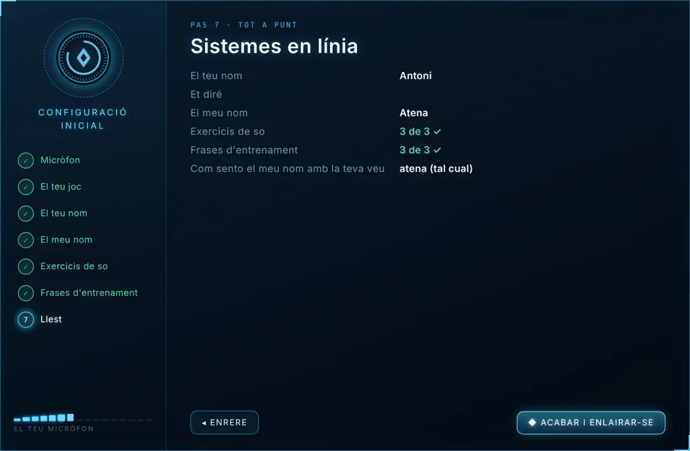
Un resum de tot. Prem ◆ Acabar i enlairar-se.
La Nova s'obre en una finestra pròpia. Si la tanques, la Nova continua a la safata de Windows, al costat del rellotge (secció 10). Quan la tornes a obrir recupera la conversa, la secció i la mida de la finestra.
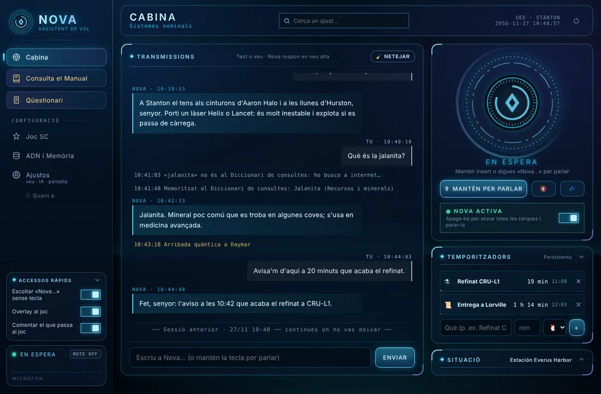
12 34 56 78 910 11Tot hi cap sense barres de desplaçament: si la finestra és baixa, l'holograma es fa petit i Situació, Temporitzadors i Accessos ràpids es pleguen sols (plegats mostren un resum com «2 actius»). Prem la seva capçalera per obrir-los o plegar-los; la Nova ho recorda.
| Secció | Què hi trobaràs |
|---|---|
| 📖 Consulta el Manual | Sota Cabina: obre aquest manual al navegador (en el teu idioma). |
| Joc SC | Ordres de veu, tecles i joystick, avisos del joc (Game.log i perfils de nau), xat del joc i idioma del joc. |
| Nova | Identitat, veu (estils, pronunciació i sortida d'àudio), escolta (micròfon, com parlar-li i mode repòs) i intel·ligència (amb l'estalvi de tokens). |
| Pantalla | El logo d'estat i els hologrames sobre el joc, i l'aspecte: nivell d'efectes i tema de color. |
| Informació | Fonts i estat dels servidors, Diccionari, el que sap de tu, bitàcola i estadístiques, i Discord. |
| Ajustos | Idioma de NOVA AI, finestra i safata, actualitzacions, Quant a, còpies de seguretat, fitxers i començar de zero. |
| 🔎 Cerca un ajust | A la capçalera (o Ctrl+F): escriu part del nom d'una opció i t'hi porta directament. |
La Cabina és el registre de tot el que dius a la Nova i de les seves respostes. Sota cada resposta veuràs quin motor d'IA l'ha generada (per exemple, via gemini-flash-lite-latest).
Mantén premuda Insert mentre parles i deixa-la anar. La pots canviar per qualsevol tecla, botó del ratolí o del HOTAS.
«Nova, baixa el tren d'aterratge». Si només dius «Nova», et respon «Sí, senyor?» i espera l'ordre.
Fes servir el quadre de text de la Cabina i prem ENVIAR. Ideal quan ets en una trucada de veu de Discord.
| Tipus | Frases |
|---|---|
| Maniobres | «baixa el tren d'aterratge» · «sol·licita aterratge» · «mode VTOL» · «salt quàntic» |
| Sistemes | «activa els escuts» · «activa l'energia» · «obre les portes» · «llums» |
| Informació del joc | «on puc minar quantainium?» · «a quant es ven la laranite?» · «plànols d'una pistola a Pyro» |
| La teva sessió | «on soc?» · «on he deixat el meu personatge?» · «qui ha pujat a la nau?» |
| Memòria | «recorda que la meva nau preferida és la Cutlass» · «oblida la Cutlass» |
| Jugadors i planetes | «busca'm un jugador» · «parla'm de Daymar» · «què és el Security Post Kareah?» |
| Temporitzadors | «recorda-m'ho d'aquí a 3 hores i 20 minuts, la refineria d'ARC-L1» · «quins temporitzadors tinc?» |
| Comerç i servidors | «quina ruta paga més amb 100.000 aUEC?» · «com estan els servidors?» |
| Combat i estadístiques | «fixa l'objectiu» (va a la bitàcola) · «quantes baixes porto aquest mes?» |
| Control de la Nova | «Nova, atura't» o «desactiva't» (l'atura) · «Nova, activa't» · «silenci» o «calla» (deixa de parlar) |
| Sobre la Nova | «Qui ets?» · «Presenta't» · «Què saps fer?» · «Obre el manual» |
| Xat del joc | «Nova, envia un missatge al xat: algú necessita escorta?» (el tradueix si cal i l'escriu) |
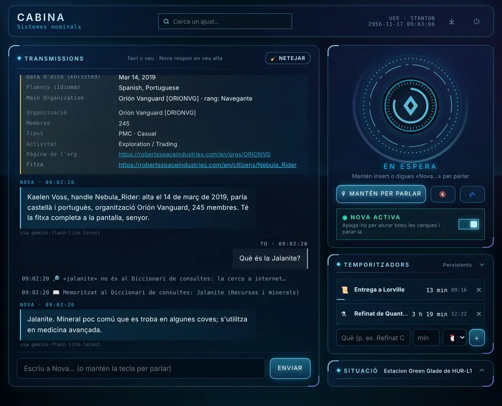
90, 1:30 o 2h30) i prem ＋.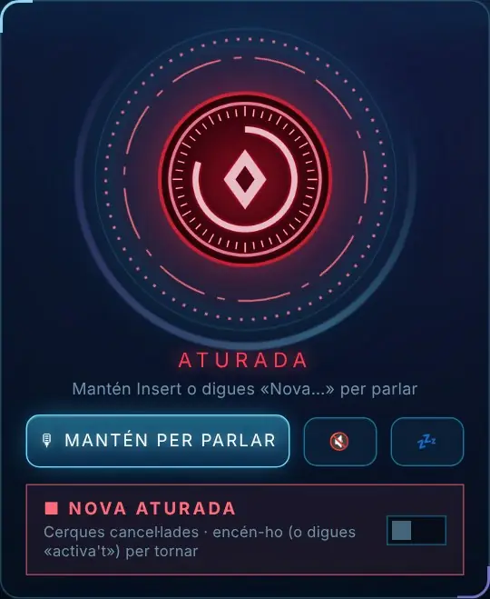
On ets, els teus contractes actius, l'overlay i els servidors RSI: en arrencar, NOVA consulta status.robertsspaceindustries.com i t'avisa de caigudes o manteniments.
Nebula_Rider) i prem Enter. Si ho dius tot de cop («busca el jugador Nebula_Rider»), el pas 2 se salta.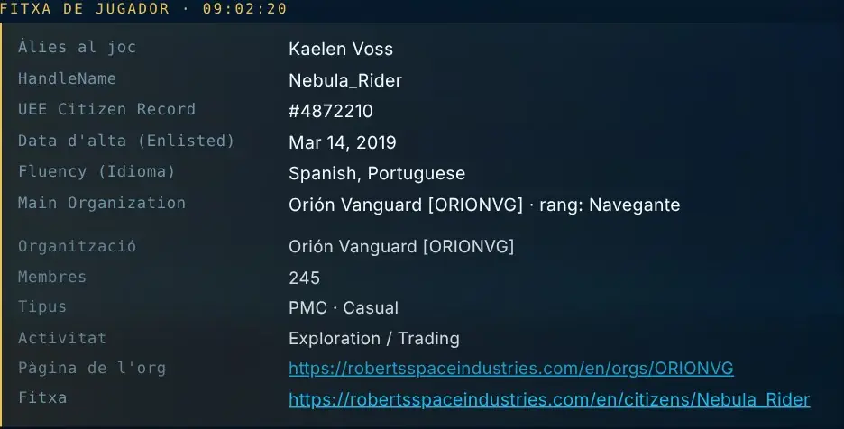
La Nova llegeix la seva fitxa pública a robertsspaceindustries.com: àlies al joc, handle, expedient UEE, data d'alta, idiomes i organització principal, i després la pàgina d'aquella organització (membres, tipus, activitat). La seva fitxa policial també apareix com a holograma per sobre del joc (secció 08).
Si alguna dada està oculta (RSI la mostra com a [REDACTED]), la Nova et diu que aquella informació està oculta.
Cada cerca es desa a Informació › Bitàcola i estadístiques, al fitxer Busquedas_de_jugadores.log: data · hora · jugador · organització.
Amb un webhook a Informació › Discord, la Nova pregunta «L'envio a Discord?» i, si dius o escrius «sí» en 30 segons, la publica en aquell canal (els objectius de caça, en vermell). La Cabina t'indica si ha arribat.
Quan acceptes una missió de caçarecompenses o PvP (o quan apareix «Objectiu nou: Neutralitzar XX»), la Nova pregunta «Busco la seva fitxa de RSI?» i només la busca si dius «sí». Si té fitxa és un jugador: sona una alerta i la seva fitxa apareix en vermell amb el segell «OBJECTIU DE CAÇA». Si no, et diu que és un pilot NPC. Tots dos casos van al registre de cerques de jugadors.
Tot el que té a veure amb Star Citizen, en cinc pestanyes: Ordres de veu, Tecles i joystick, Avisos del joc, Xat del joc i Idioma del joc.
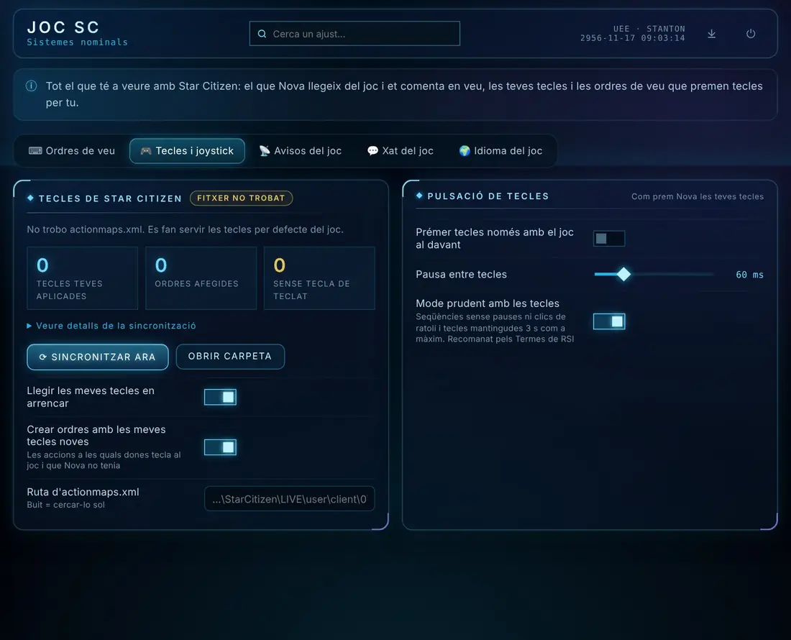
actionmaps.xml en arrencar i fa servir les teves pròpies tecles.La llista d'ordres agrupades per categoria (enlairament i aterratge, energia i sistemes, armes, mineria…). Cadascuna mostra les seves frases i tecles. Les pots buscar per nom, frase o tecla.
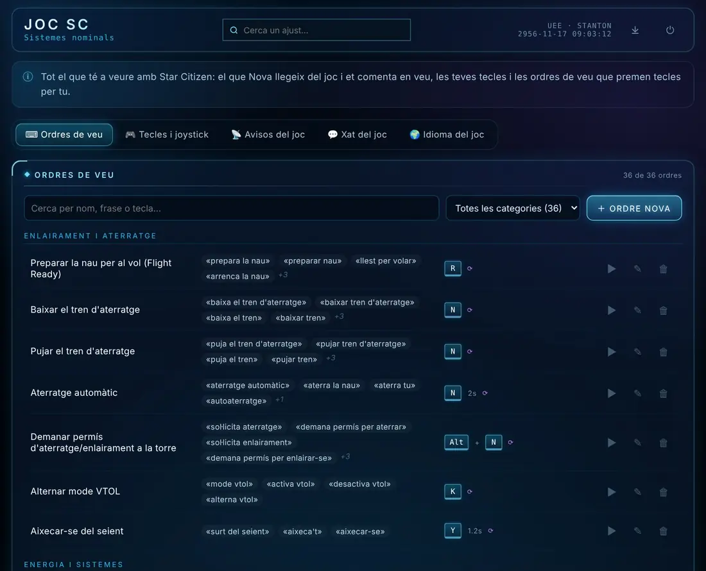
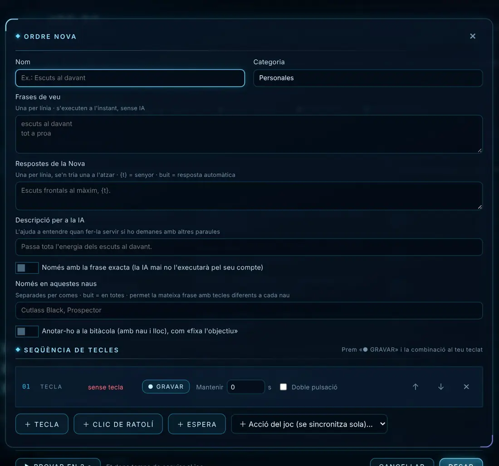
Només en aquestes naus limita una ordre a certes naus (i permet la mateixa frase amb tecles diferents a cadascuna). Anotar-ho a la bitàcola el registra amb la nau i el lloc, com «fixa l'objectiu».
comandos_personales.json): les actualitzacions no les esborren. ↺ restaura una ordre de fàbrica.Cada nau pot tenir els seus propis avisos en veu: per exemple, sense avisos de grup ni de diners a la MOLE. La Nova sap en quina nau vas pel Game.log. Escriu o tria la nau, prem ＋ CREAR PERFIL i marca el que vols sentir-hi; el que és diferent dels avisos generals es mostra en groc. El perfil de la nau on ets es marca com EN ÚS.
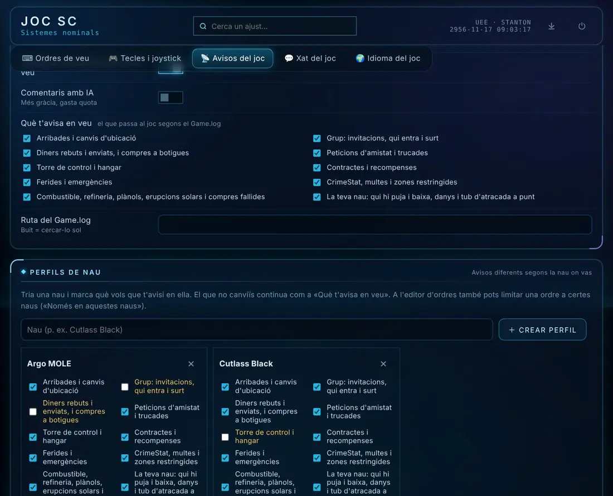
El Game.log no registra quan fixes un objectiu («marcar» un enemic). Si li ho demanes per veu («Nova, fixa l'objectiu», «marca l'objectiu»), la Nova prem la tecla i ho anota a la bitàcola (etiqueta OBJECTIU) amb la nau i el lloc.
«Nova, quina ruta paga més amb 100.000 aUEC?»: amb els preus d'UEX calcula quants SCU comprar per a la bodega de la nau on vas (o la que diguis), l'estoc a l'origen, la demanda al destí i els teus diners, i ordena pel benefici real. Si no sap la teva nau fa servir la Bodega per defecte d'Informació › Fonts.
Escriu al xat de Star Citizen sense deixar anar els controls, i en anglès encara que li parlis en un altre idioma:
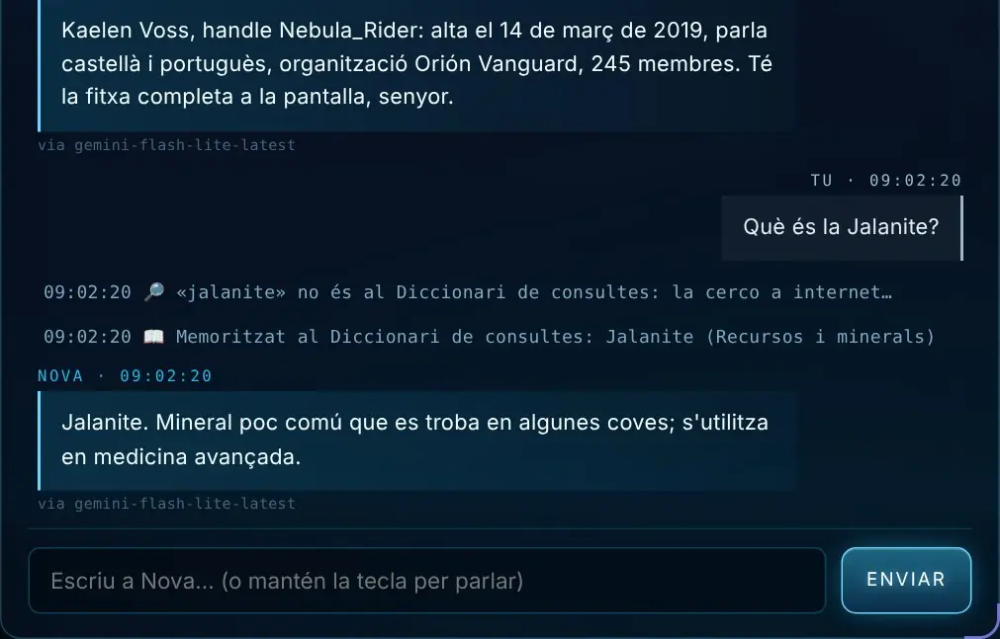
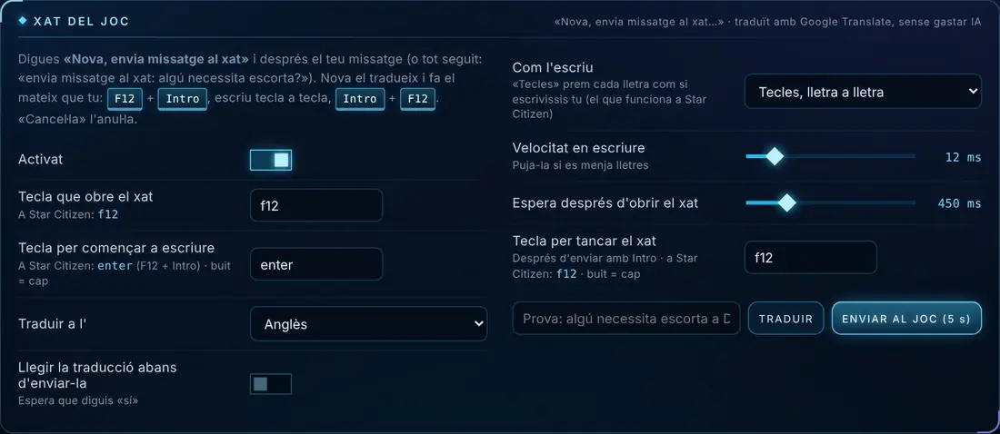
Escriu un missatge i prem TRADUIR per veure la traducció, o ENVIAR AL JOC (5 s) i torna a Star Citizen: s'escriu al cap de 5 segons. «Cancel·la» anul·la un missatge pendent. Cada missatge va a la bitàcola (etiqueta XAT).
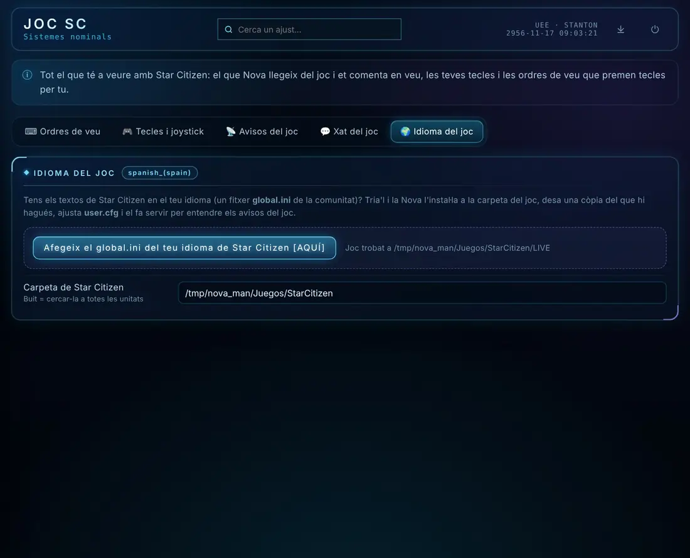
global.ini de la comunitat que triïs. Sobreescriu els fitxers de LIVE després de fer-ne una còpia.A Nova hi ha tot sobre ella, en quatre pestanyes: Identitat, Veu, Escolta i Intel·ligència. Comencem per com sona. Totes les veus són gratuïtes: les d'Edge són les més naturals i les de Piper funcionen sense internet.
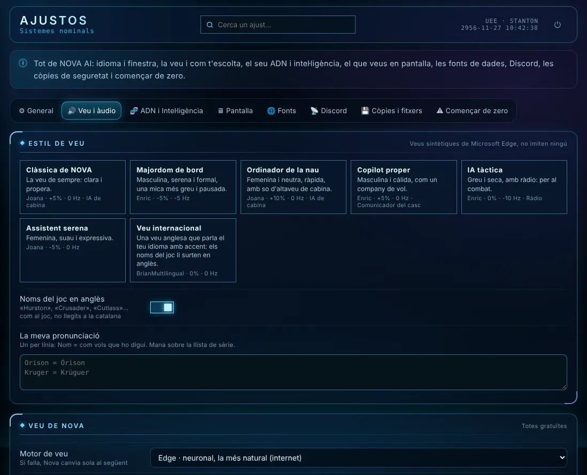
| Motor | Com és | Internet |
|---|---|---|
| Edge | Veus neuronals de Microsoft, molt naturals. La llista mostra les del teu idioma i, al final, les Multilingual d'altres idiomes, que també parlen el teu (amb el seu accent). | Sí |
| Piper | Bona qualitat i sense internet. La veu es descarrega sola la primera vegada. | No |
| Windows | La veu del sistema, com a últim recurs. | No |
A dalt de Nova › Veu tens set estils: combinacions ja afinades de veu, velocitat, to i efecte de cabina, amb l'aire dels assistents de bord de les pel·lícules. Prem-ne un i la Nova el prova al moment; si després toques alguna cosa a mà, l'estil es desmarca i queda al teu gust.
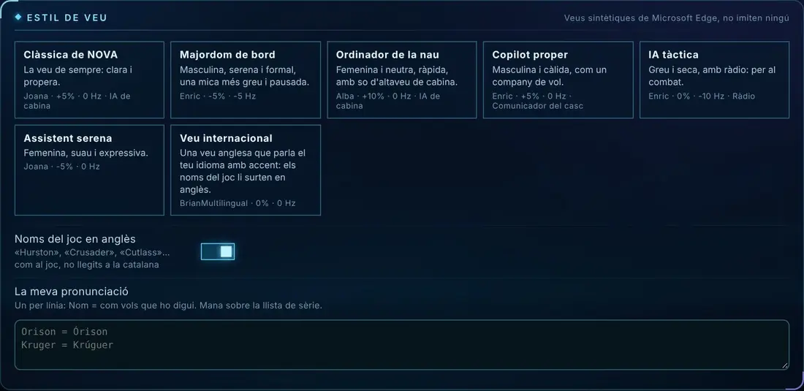
| Estil | Com sona |
|---|---|
| Clàssica de NOVA | La veu de sempre: clara i propera, amb efecte de cabina. |
| Majordom de bord | Masculina, serena i formal, una mica més greu i pausada. |
| Ordinador de la nau | Femenina i neutra, ràpida, amb so d'altaveu de cabina. |
| Copilot proper | Masculina i càlida, pel comunicador del casc. |
| IA tàctica | Greu i seca, per ràdio, amb espetec: per al combat. |
| Assistent serena | Femenina, suau i expressiva. |
| Veu internacional | Una veu anglesa que parla el teu idioma amb accent: els noms del joc li surten en anglès. |
Edge llegeix Crusader, Hurston o Cutlass amb les regles del teu idioma. Amb Noms del joc en anglès (activat de fàbrica) la Nova els pronuncia com al joc: planetes, llunes, estacions, fabricants i naus. A La meva pronunciació afegeixes o corregeixes els teus, un per línia: Orison = Órison. El teu mana sobre la llista de fàbrica, i ▶ Provar veu diu una frase amb noms del joc perquè ho sentis.
Al final de la pestanya Veu: si tens diverses sortides (altaveus, auriculars, interfície d'àudio USB…), tria on vols sentir la Nova. Per defecte fa servir la de Windows. ▶ Provar el so per comprovar-ho. Amb auriculars, la Nova no se sent a si mateixa pel micròfon.
Com et comuniques amb la Nova: la pestanya Escolta reuneix el micròfon, com parlar-li i el mode repòs (capítol 10).
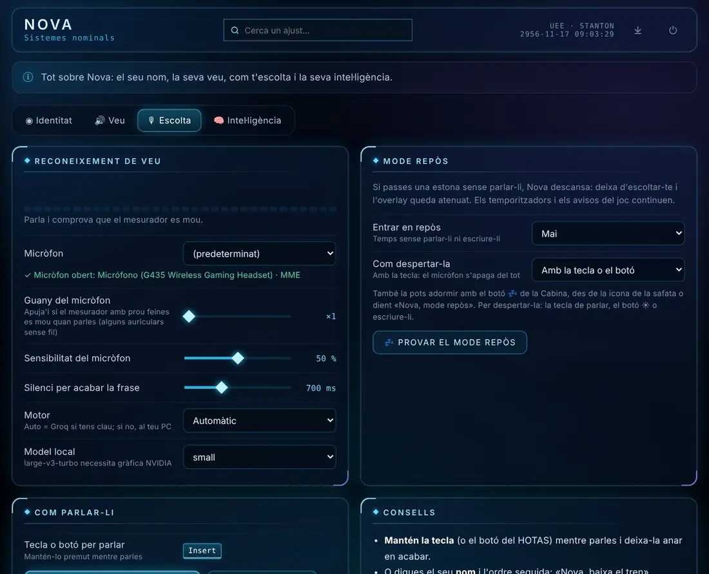
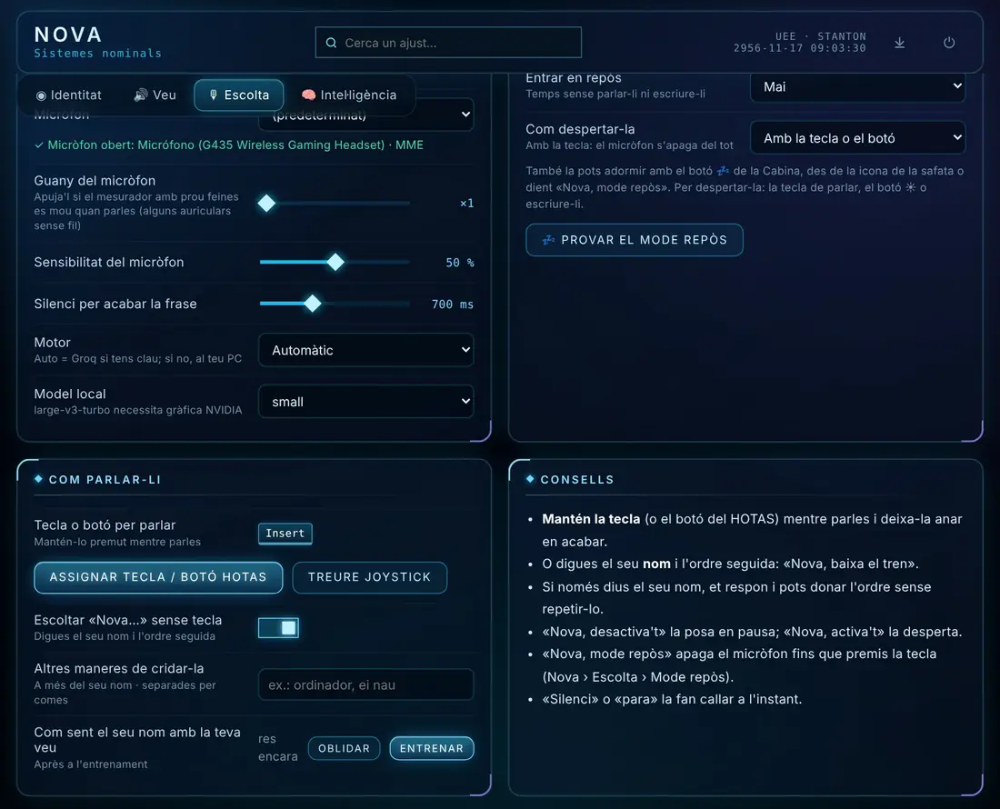
small sense NVIDIA; large-v3-turbo amb NVIDIA.El cervell de la Nova: el seu nom i el teu (pestanya Identitat), i a Intel·ligència les claus dels motors d'IA, l'ordre en què els fa servir, la seva personalitat i l'estalvi de tokens.
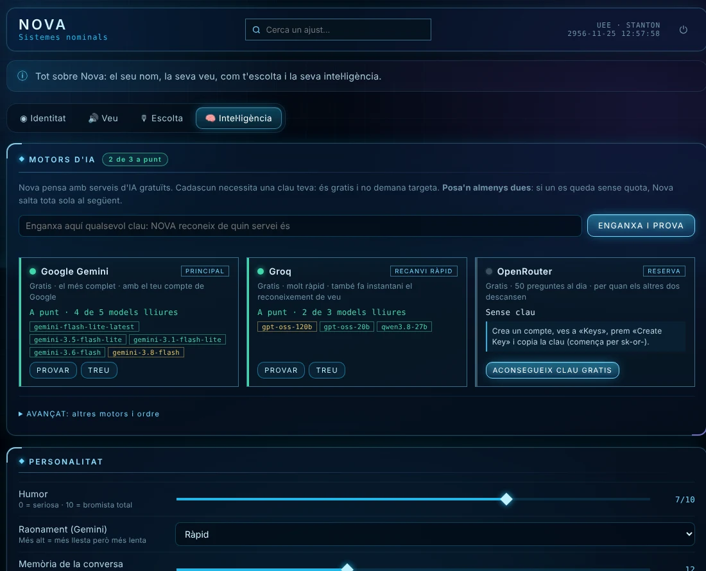
Nom de la IA, el teu nom i com et diu. Si li canvies el nom, repeteix l'entrenament amb ◆ Repetir configuració perquè el reconegui amb la teva veu.
Des de la 2.1.5 NOVA no porta claus de sèrie: cada pilot posa les seves (gratis, capítol 11). Enganxa qualsevol clau a la casella de dalt i NOVA reconeix de quin servei és, la desa i la prova. Cada servei té la seva targeta amb un semàfor: verd a punt, ambre en pausa (amb l'hora a què torna) i vermell clau no vàlida.
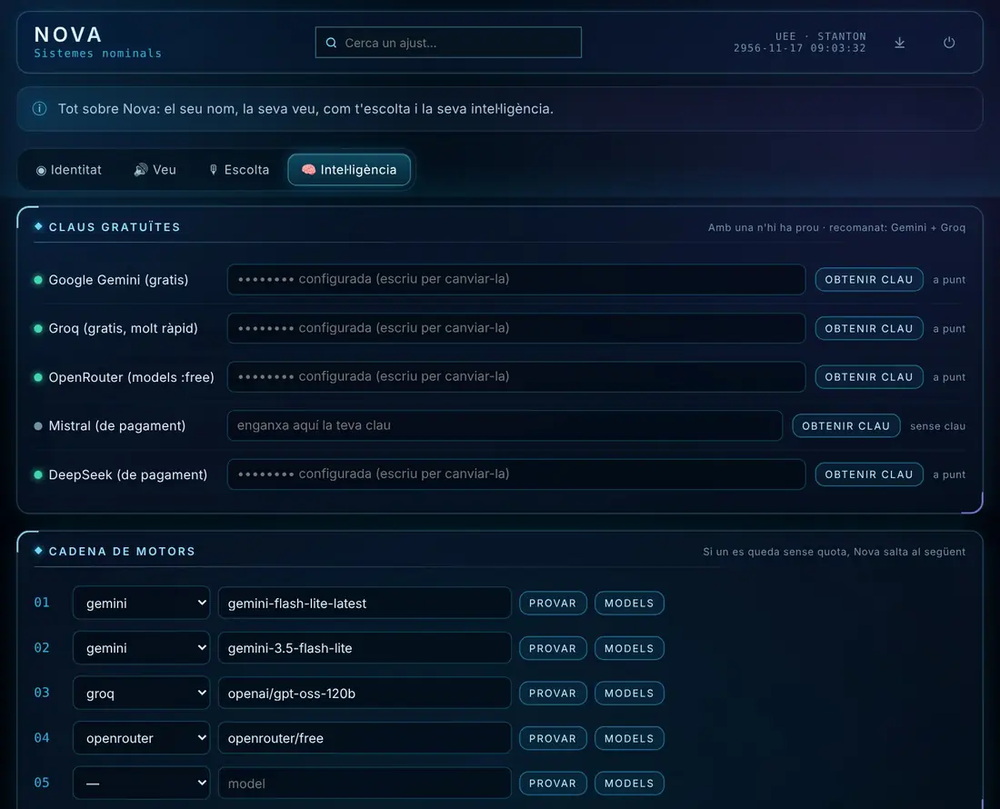
Amb la clau d'un servei, la Nova fa servir tots els seus models gratuïts, l'un darrere l'altre, i després passa al servei següent: Gemini (5 models) › Groq (3) › OpenRouter. A Gemini i a Groq cada model té la seva pròpia quota, així que si un s'omple el següent sol estar lliure. Cada error es tracta segons la seva causa:
| Què passa | Què fa la Nova |
|---|---|
| Límit per minut | Si el servei demana esperar uns segons, espera i torna a provar; si és més, aquell model descansa just aquest temps i prova el següent. |
| Quota del dia esgotada | Aparta aquell model fins que es renova la quota (a Gemini, a mitjanit de Califòrnia: les 9:00 a Catalunya). |
| Servidor saturat o sense resposta | Pausa curta i prova el següent; si continua fallant, la pausa creix (fins a 10 min). |
| Clau no vàlida | La targeta es posa en vermell fins que n'enganxis una altra. |
Si no en queda cap de lliure, la Nova et diu quin falla i quan torna. A Avançat pots posar Mistral (de pagament), fer servir Ollama al teu PC com a últim recurs, triar tu l'ordre dels motors o treure totes les pauses amb Torna-los a provar tots ara.
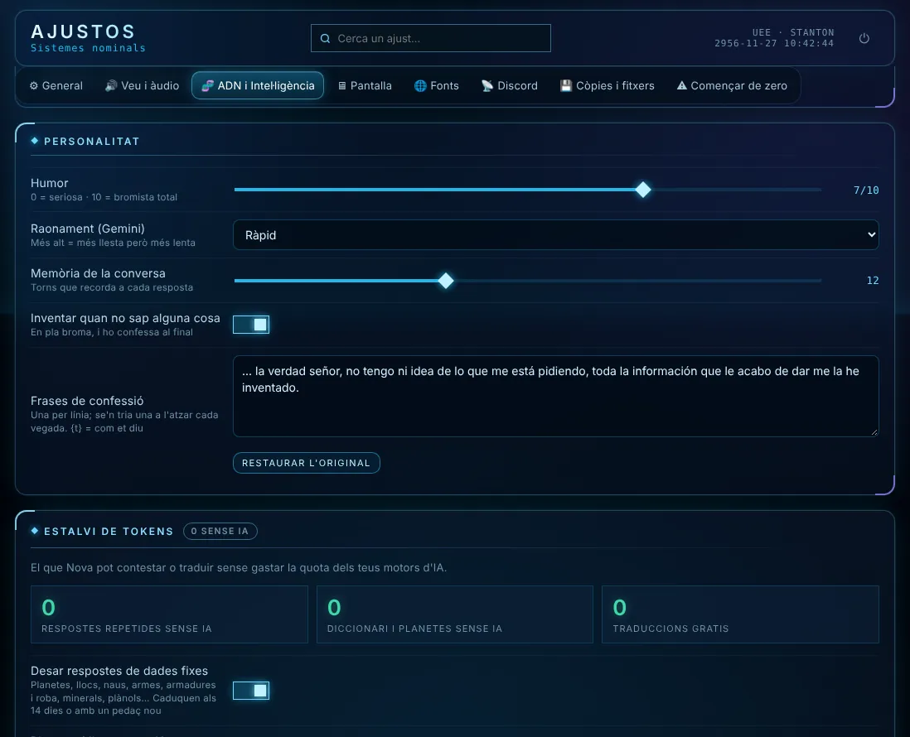
| Ajust | Per a què serveix |
|---|---|
| Humor | De 0 (seriosa) a 10 (bromista total). |
| Raonament (Gemini) | Més alt = més llesta però més lenta. «Ràpid» és l'ideal mentre voles. |
| Memòria de la conversa | Quants torns anteriors recorda a cada resposta. |
| Inventar quan no ho sap | Activat: s'inventa la resposta amb gràcia i ho confessa al final. Desactivat: et diu amb humor que no ho sap. |
| Frases de confessió | Una per línia; en tria una a l'atzar. {t} se substitueix per com et diu. Restaurar l'original torna a la de fàbrica. |
Al final de Nova › Intel·ligència. Les claus gratuïtes tenen un límit diari. La Nova respon tot el que pot sense la IA:
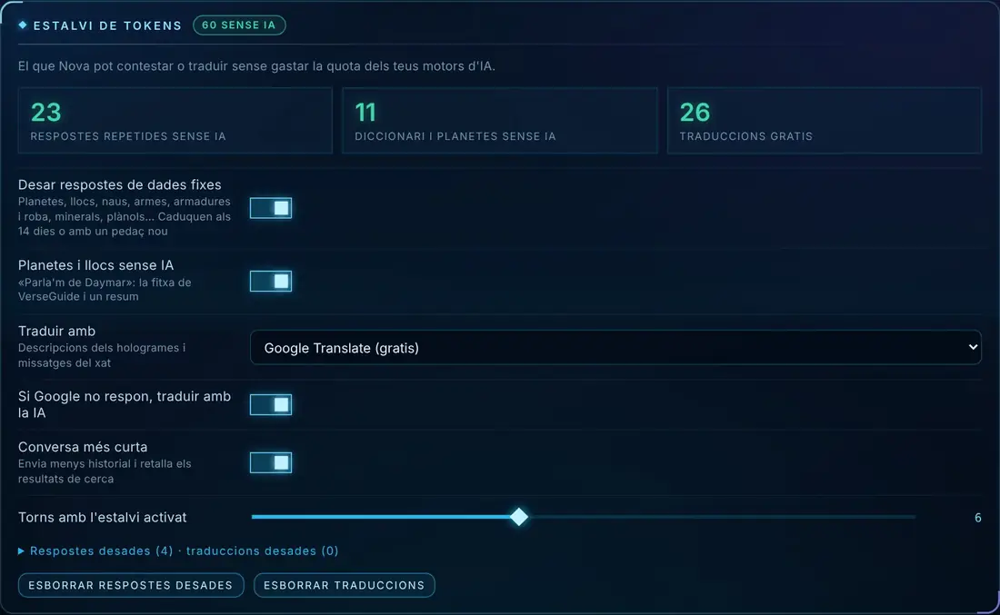
Si la IA respon fent servir només dades que no canvien (naus, armes, armadures i roba, components, minerals, plànols, planetes…), la resposta es desa. La pròxima vegada que preguntis el mateix («què és la Cutlass Black?» o «parla'm de la Cutlass Black») la Nova la repeteix sense gastar res. Caduquen al cap de 14 dies o quan canvia el pegat. Els preus, les rutes, la teva sessió i les preguntes que depenen de la conversa no es desen mai.
«Parla'm de Daymar», «què és el Security Post Kareah?»: la Nova obté la fitxa de VerseGuide, la mostra com a holograma i te'n fa un resum en veu.
Les descripcions dels hologrames i els missatges del xat es tradueixen amb Google Translate. Només si Google no respon es fa servir la IA (ho pots desactivar). Les traduccions es desen i no es tornen a demanar mai.
Envia menys historial a la IA (6 torns de fàbrica) i retalla les respostes i els resultats de cerca llargs. Comptadors, una llista de respostes desades i botons per esborrar-les.
Tot el que NOVA dibuixa damunt del joc i com es veu la finestra, en tres pestanyes: Overlay (el logo d'estat), Hologrames i Aspecte (nivell d'efectes i tema de color). La vista prèvia fa servir de fons una escena del joc perquè vegis com queda.
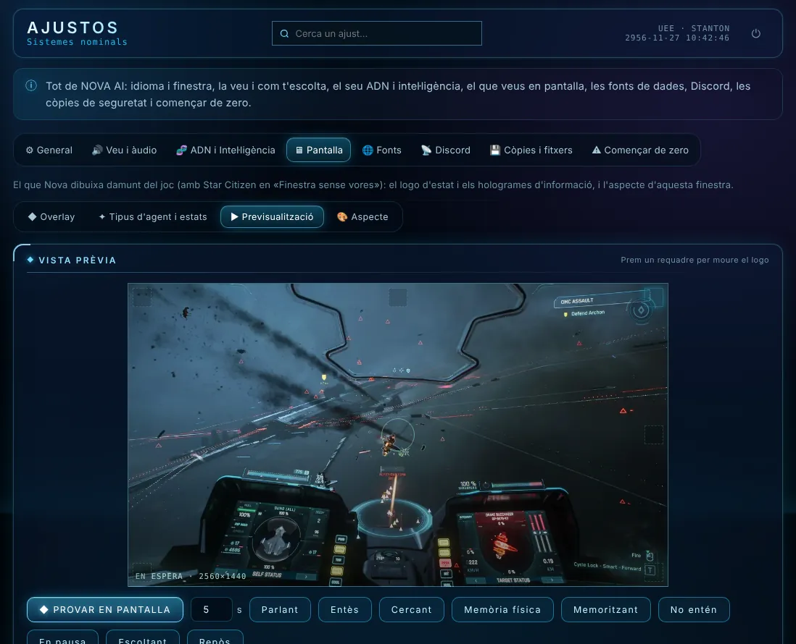
Fitxes holografiques per sobre del joc. Apareixen com una projecció (una línia de llum que s'obre amb un so d'encesa), tenen línies d'escaneig mentre són a la pantalla i es pleguen amb un so d'apagada.
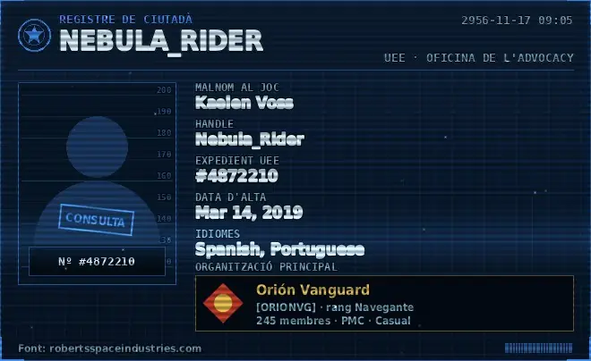
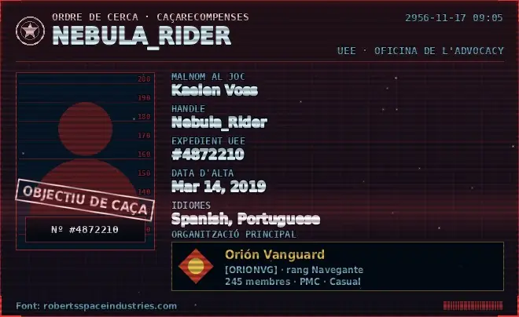
Quan busques un jugador: foto de perfil, àlies al joc, handle, número d'expedient, data d'alta, idiomes i l'organització amb el seu logo. El que el jugador amaga surt com a REDACTED.
Si l'objectiu d'una recompensa o missió PvP és un jugador i dius «sí» a buscar-lo, sona una alerta de dos tons abans d'obrir-se la fitxa, en vermell i amb el segell OBJECTIU DE CAÇA. Si és un pilot NPC, només t'ho diu.
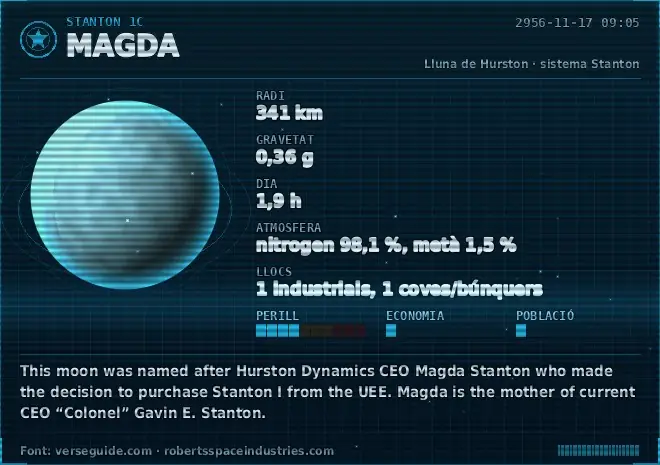
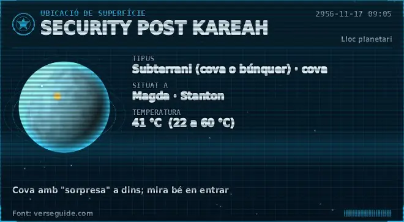
«Nova, parla'm de Daymar». Dades de verseguide.com: tipus, radi, gravetat, durada del dia, atmosfera, perill, economia, població, els seus llocs i una descripció en el teu idioma.
Coves, llocs avançats, bases, búnquers: «què és el Security Post Kareah?» → tipus, on és, temperatura i descripció en el teu idioma.
En arribar: quan el Game.log indica que t'acostes a un planeta o lluna, o que arribes a un dels seus llocs, la fitxa apareix sola (com a màxim un cop cada mitja hora per al mateix lloc).
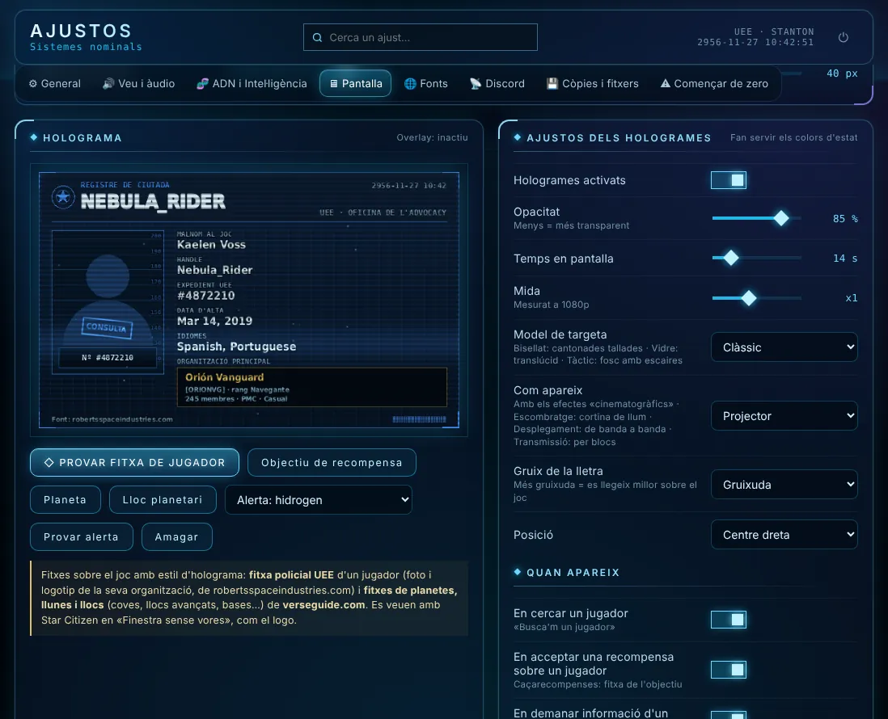
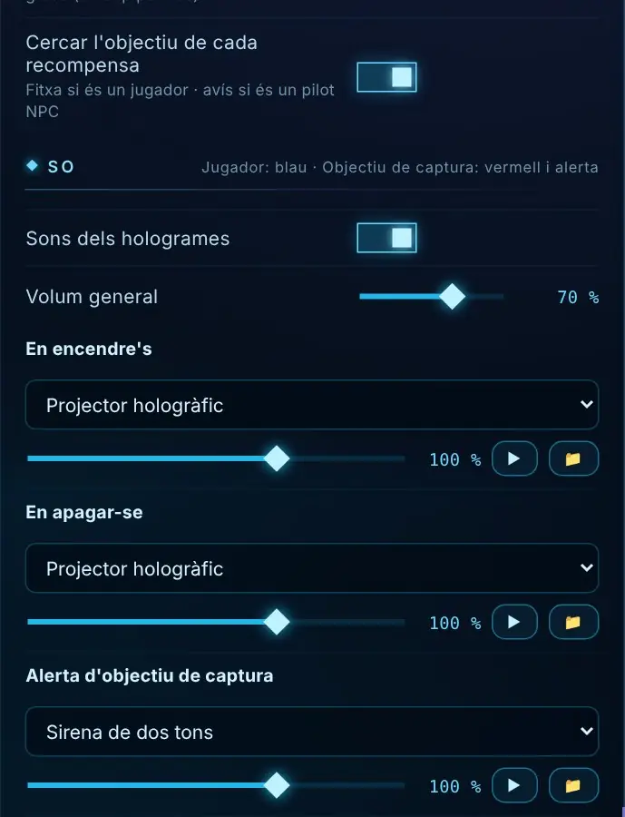
Cada holograma fa un so quan s'encén i quan s'apaga, i els objectius de caça tenen una alerta abans d'obrir-se. Per a cadascun dels tres moments tries:
| Moment | Sons de la llista |
|---|---|
| En encendre's | Projector hologràfic · Pols digital · Escàner · Campaneta · Arrencada de motor |
| En apagar-se | Projector hologràfic · Pols digital · Desconnexió · Campaneta · Aturada de motor |
| Alerta de caça | Sirena de dos tons · Clàxon · Pitets ràpids · Alarma de proximitat · Campana de combat |
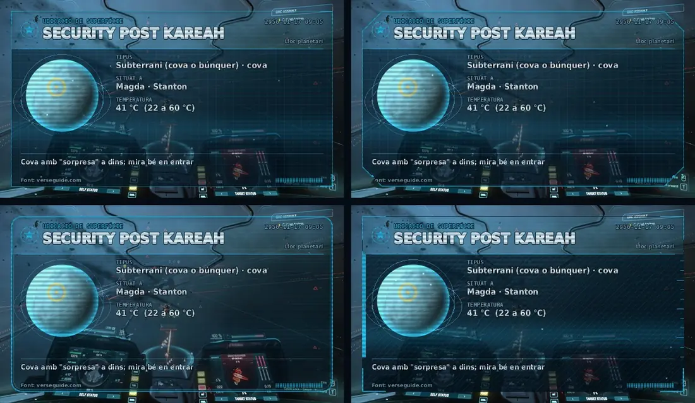
Clàssic (reixa i cantonades d'HUD), Bisellat (cantonades tallades en diagonal), Vidre (translúcid i arrodonit) o Tàctic (fosc, amb escaires i una barra lateral).
Amb els efectes cinematogràfics: Projector (s'obre des del centre), Escombratge (una cortina de llum de dalt a baix), Desplegament (de banda a banda) o Transmissió (es materialitza per blocs). En marxar fa el mateix al revés.
Normal, Gruixuda (de fàbrica) o Molt gruixuda. A la lletra petita engreixa just el necessari per no emborronar-se.
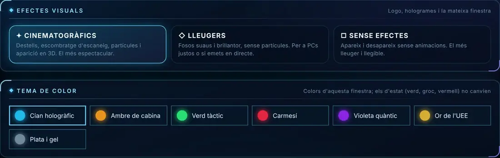
Espurnes, escombratge d'escaneig, aberració cromàtica en projectar-se, partícules de llum i un anell que gira al voltant del logo.
Fosos i resplendor suaus, sense partícules ni parpelleig. Per a PC modestos o si fas streaming.
Apareix i desapareix a l'instant, sense animacions. El més lleuger i llegible.
Tema de color: Cian hologràfic (el de sempre), Ambre de cabina, Verd tàctic, Carmesí, Violeta quàntic, Or de l'UEE o Plata i gel. Canvia els colors d'aquesta finestra al moment; els colors d'estat (verd, groc, vermell, morat) no canvien, perquè continuïn significant el mateix.
D'on treu la Nova la informació i el que recorda, en cinc pestanyes: Fonts, Diccionari, El que sap de tu, Bitàcola i estadístiques i Discord. En arrencar comprova si hi ha dades noves per al teu pegat abans d'encendre res.
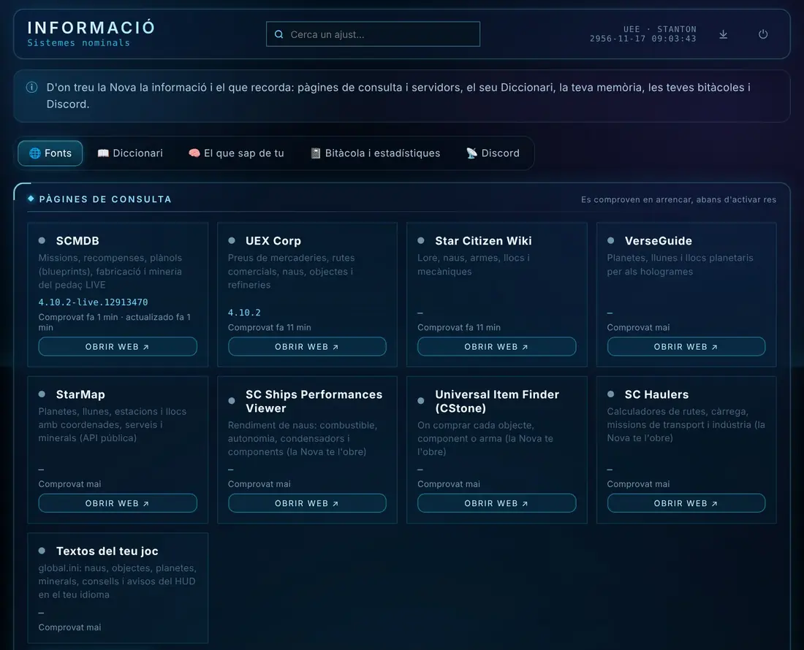
| Font | Què aporta |
|---|---|
| SCMDB | Missions, recompenses, plànols, fabricació i mineria del pegat LIVE. |
| UEX Corp | Preus de mercaderies, rutes comercials, naus, objectes i refineries. |
| Star Citizen Wiki | Lore, naus, armes, llocs i mecàniques. |
| Els textos del teu joc | El global.ini: noms oficials i avisos del HUD en el teu idioma. |
| RSI | Fitxes públiques de jugadors i organitzacions, i l'estat dels servidors. |
| VerseGuide | Planetes, llunes i llocs planetaris per als hologrames. |
| StarMap | Planetes, estacions i llocs: gravetat, temperatura, coordenades, serveis (clínica, plataformes) i minerals. |
Pàgines que la Nova obre al navegador quan són la millor font (digues-li: «obre el cercador d'objectes»): Universal Item Finder (finder.cstone.space, on comprar cada objecte), SC Ships Performances Viewer (spviewer.eu, rendiment de les naus) i SC Haulers (schaulers.com, calculadores de càrrega i rutes).
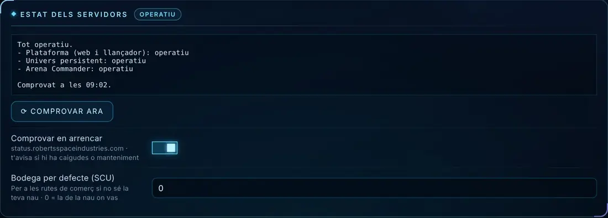
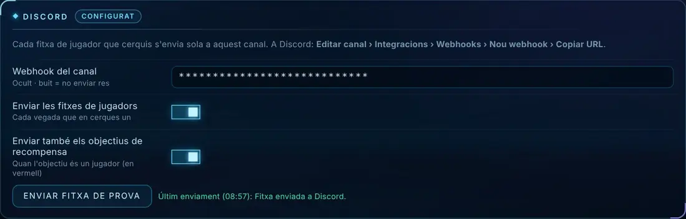
En arrencar, NOVA consulta status.robertsspaceindustries.com i t'avisa de caigudes o manteniments. Comprovar ara ho torna a mirar. Pregunta-li «com estan els servidors?».
Enganxa el webhook d'un canal (Discord: Edita el canal › Integracions › Webhooks): després de cada fitxa la Nova pregunta si l'envia; amb «sí» es publica amb foto i logo, també els objectius de caça (en vermell). Enviar fitxa de prova en publica una d'exemple i a sota veus el resultat de l'última publicació.
Els SCU que la Nova fa servir per calcular rutes comercials quan no sap en quina nau vas.
A Ajustos › General actives o desactives la comprovació de versions noves en arrencar i en sortir, i en pots buscar una a mà amb Comprovar actualitzacions ara. Com funciona l'actualització: secció 02.
El que la Nova guarda de tu: Informació › El que sap de tu i Bitàcola i estadístiques. Els teus fitxers, les còpies de seguretat i començar de zero són a Ajustos (capítol 10).
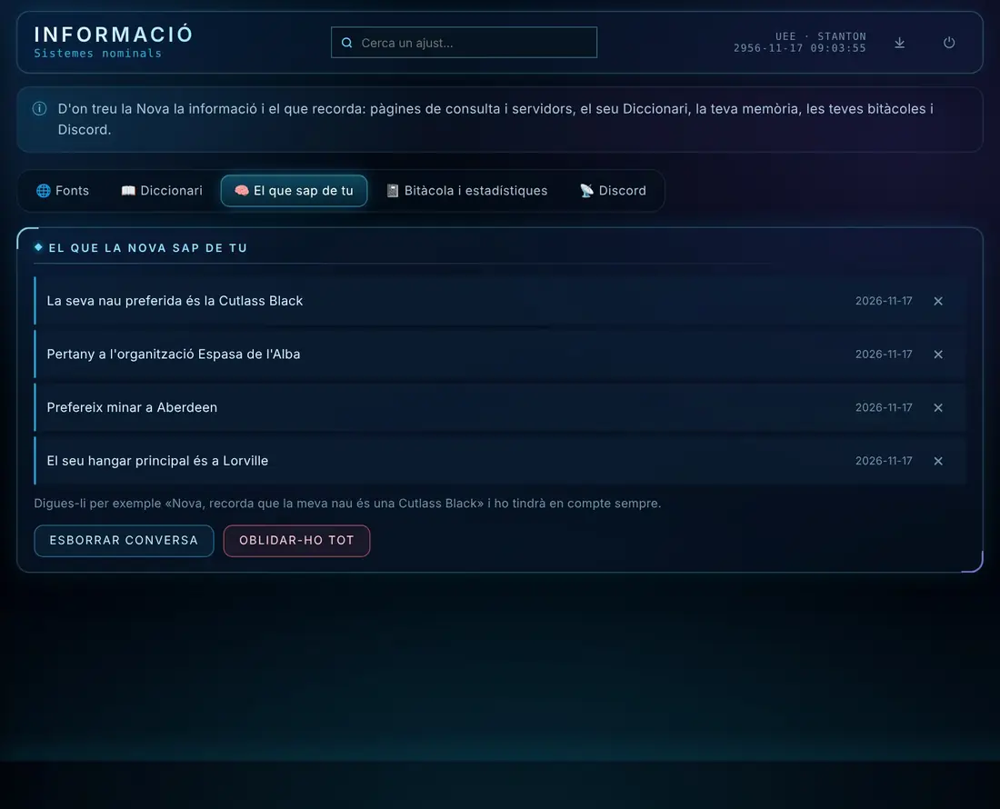
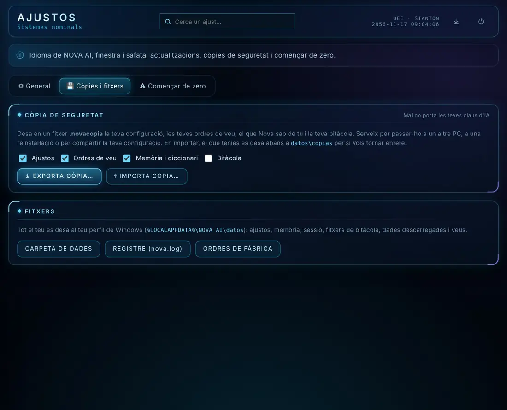
A Ajustos › Còpies i fitxers. Tot el teu viu a %LOCALAPPDATA%\NOVA AI\datos. Tres botons:
Cada sessió de joc s'escriu en un fitxer .log que pots obrir amb el Bloc de notes (es guarden les 60 últimes). Surt del mateix Game.log: si obres la Nova amb la sessió ja començada o després de jugar, reconstrueix la bitàcola completa.
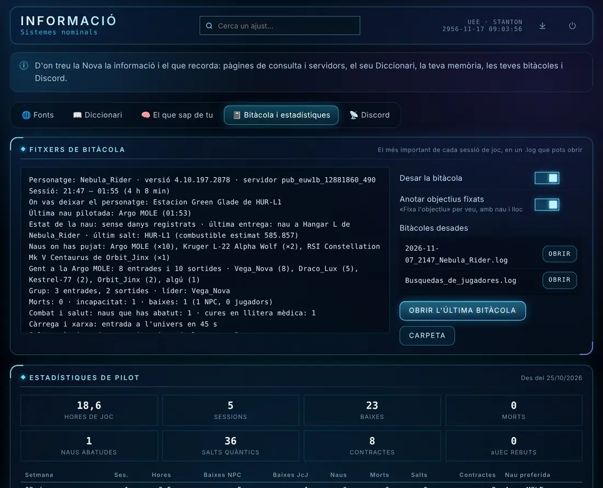
| Etiqueta | Què registra |
|---|---|
| COMBAT | Baixes de NPC i de jugadors (arma i causa) i naus que destrueixes o inutilitzes. |
| MORT · MORTS | Les teves morts (qui, amb què, causa), les dels altres i el punt de reaparició. |
| SALUT | Ferides, incapacitacions amb la seva causa i curacions a la llitera mèdica. |
| CÀRREGA · XARXA | Connexió, aparició, temps de càrrega, càrregues encallades i talls de xarxa. |
| NAU · GRUP · TORRE… | Pujar i baixar de naus, qui puja a la teva, grup, hangar, contractes, diners, compres, plànols. |
Cada jugador que busques (o que la Nova busca per una recompensa) s'escriu a Busquedas_de_jugadores.log, a la mateixa carpeta de bitàcoles. És un sol fitxer que no s'esborra amb les sessions antigues:
Si hi ha una sessió en curs, la cerca també va a la bitàcola d'aquella sessió (etiqueta JUGADOR o OBJECTIU).
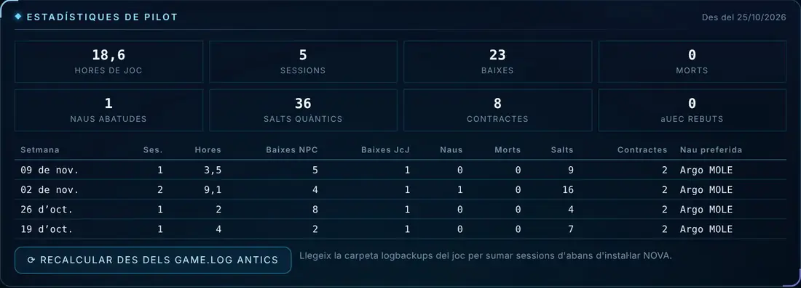
Hores, baixes, morts, salts, contractes i diners gastats a botigues de totes les teves sessions, setmana a setmana. Recalcular llegeix els Game.log antics del joc (logbackups) per afegir el que vas jugar abans d'instal·lar la Nova. Pregunta-li «quantes baixes porto aquest mes?».
La memòria física de la Nova: Diccionario_de_consultas.txt, a la teva carpeta de dades. Ordenat per grups (planetes i llunes, estacions, ciutats, llocs, naus i vehicles, armadures, armes personals i de nau, components, recursos i minerals, mercaderies, roba, pintures, fabricants…) i dins de cadascun per ordre alfabètic. Les variants van juntes sota la seva família, perquè no són iguals: l'Attrition-1 és de mida 1 i l'Attrition-5 de mida 5.
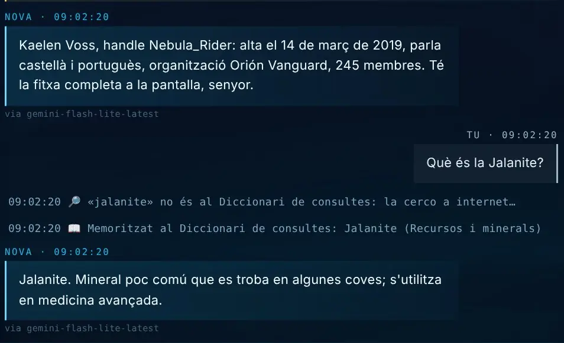
Si no existeix (primera instal·lació), la Nova el crea, t'ho diu i l'omple amb els textos oficials del joc en el teu idioma (el global.ini del joc): unes 7.000 entrades, sense gastar res. Cada entrada porta el pegat, la data i el seu origen (joc, internet o IA).
Es conserva entre versions, en actualitzar i quan «comences de zero», i el desinstal·lador no l'esborra. Amb un pegat o una traducció nous, el que ve del joc s'actualitza sol. «Nova, actualitza la fitxa de X» ho torna a buscar.
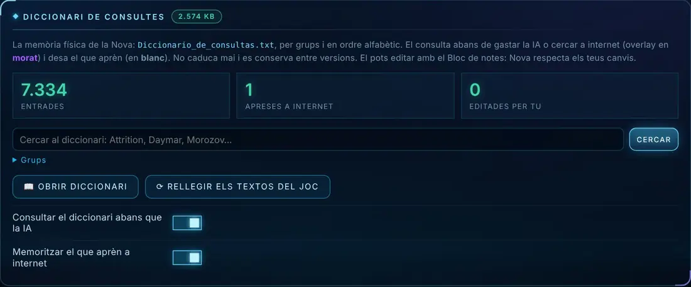
* Nom: definició). La Nova fa servir el teu text i no el torna a sobreescriure mai. Cercar et mostra què sap d'alguna cosa sense preguntar-li-ho.A Ajustos tens l'idioma (és l'únic lloc on es canvia), la finestra i la safata, les actualitzacions, el recorregut guiat, Quant a, les còpies de seguretat i començar de zero. NOVA AI parla cinc idiomes: castellà, anglès, català, francès i alemany.
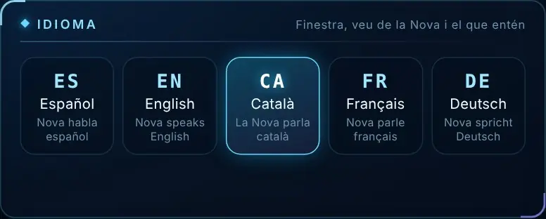
Prem la targeta del teu idioma. La finestra es recarrega i canvia tot: els textos, la veu de la Nova, el que entén, les seves ordres de veu, els hologrames i aquest manual. També el pots triar a la primera pantalla de l'instal·lador, que et proposa el de Windows.
La Nova sempre et tracta amb respecte: señor, sir, senyor, monsieur, Herr… (ho canvies a Nova › Identitat › Com et diu).
| Idioma | «On puc comprar un P4-AR?» | «Baixa el tren d'aterratge» |
|---|---|---|
| English | "Where can I buy a P4-AR?" | "Lower the landing gear" |
| Català | «On puc comprar un P4-AR?» | «Baixa el tren» |
| Français | «Où puis-je acheter un P4-AR ?» | «Sors le train» |
| Deutsch | «Wo kann ich ein P4-AR kaufen?» | «Fahrwerk ausfahren» |
LIVE\data\Localization\<idioma>\global.ini.global.ini.antes_de_nova), posa g_language a user.cfg i el fa servir per entendre els avisos del joc en el teu idioma.spanish_(latin_america).Comprova des del teu PC, sense obrir el navegador, que respon cada pàgina que fa servir la Nova (UEX, wiki, scmdb, VerseGuide, StarMap, spviewer, CStone, SC Haulers, RSI…). Verd: respon · groc: lenta · vermell: no respon.
A la capçalera de la finestra tens 🔎 Cerca un ajust… (o prem Ctrl+F). Escriu part del nom d'una opció (gruix, micròfon, tema…): t'ensenya on és i, amb Enter o un clic, t'hi porta i la il·lumina.
.novacopia el que marquis: ajustos, ordres de veu, memòria i diccionari, i bitàcola. Mai no porta les teves claus d'IA ni el teu webhook de Discord.datos\copias, i les rutes pròpies d'aquest PC (carpeta del joc, micròfon…) es conserven.nova.log) i les ordres de fàbrica. Ajustos › Començar de zero esborra el que la Nova ha après de tu i torna a la configuració inicial.Des de la versió 1.4, quan tanques la finestra la Nova no s'apaga: es queda a la safata de Windows, al costat del rellotge (de vegades dins de la fletxeta ^). Continua escoltant, l'overlay es manté al joc i els temporitzadors continuen avisant. La primera vegada, Windows mostra un avís perquè sàpigues on és.
Obre la finestra (o la porta al davant si ja estava oberta).
Obre NOVA AI, Silencia el micròfon (MUTE), Mode repòs i Surt de NOVA AI, que la tanca del tot.
Envia la finestra a la safata a l'instant. ⏻ continua apagant la Nova.
Si passes una estona sense parlar-li, la Nova descansa: deixa d'escoltar i l'overlay s'enfosqueix, respirant a poc a poc. Els temporitzadors i els avisos del joc continuen funcionant.
Després de la configuració inicial (o la primera vegada que obres la 1.4), la Nova t'ensenya en un minut on és cada opció: la Cabina, el botó per parlar, el mode repòs, el MUTE i cada secció.
Avança amb SEGÜENT o les fletxes, i surt amb SURT o Esc. Per repetir-lo: Ajustos › General › Recorregut guiat.
El botó Qüestionari, sota «Consulta el Manual», obre vuit preguntes de l'1 al 10 (o N/S si no fas servir aquella part) i un quadre per a les teves idees.
Una API Key (clau) és com una contrasenya que deixa la Nova fer servir un servei d'intel·ligència artificial en nom teu. Des de la 2.1.5 NOVA AI no porta claus de sèrie: les de fàbrica eren les mateixes per a tothom i la quota gratuïta (que va per compte, no per persona) s'esgotava entre tots. Amb les teves tens tota la quota per a tu. Són gratis, no demanen targeta i s'aconsegueixen en un parell de minuts.
| Servei | Per a què | Cost | Comença per |
|---|---|---|---|
| Gemini | El cervell principal de la Nova. | Gratuït, sense targeta | AIza… o AQ.… |
| Groq | Reserva ultraràpida i reconeixement de veu al núvol. | Gratuït, sense targeta | gsk_… |
| OpenRouter | Molts models gratuïts com a reserva. | Gratuït (50 peticions/dia) | sk-or-v1-… |
| Mistral | IA europea. Opcional: ja no és a la cadena de fàbrica. | De pagament (des de l'agost de 2026) | sense prefix fix |
També les pots enganxar a l'últim pas de la configuració inicial.
Google indica que al pla gratuït pot fer servir el que envies per millorar els seus productes.
gsk_…): només es mostra una vegada.gpt-oss-120bAmb Groq també tindràs el reconeixement de veu més ràpid (motor «Automàtic» a Nova › Escolta).
sk-or-v1-…) abans de tancar la finestra.Fes servir els models acabats en :free o openrouter/free, que en tria un de gratuït disponible.
Des de l'agost de 2026 Mistral és de pagament o per subscripció, així que la 2.0 l'ha tret de la cadena de motors de fàbrica. Continua sent una opció teva:
mistral-small-latest).Si ja tenies una clau de DeepSeek (de pagament), la Nova la continua fent servir.
| Si… | Prova això |
|---|---|
| No em sent | Si el nucli diu MODE REPÒS, prem la teva tecla o ☀. Comprova que el botó MUTE del mesurador està OFF i que els teus auriculars no estan silenciats. Tria el teu micròfon a Nova › Escolta: allà t'avisa si només hi arriba silenci. Puja la sensibilitat o el guany si parles fluix. |
| S'activa sola | Baixa la sensibilitat o desactiva «Escoltar sense tecla». Si és una forma apresa del seu nom, treu-la amb Oblidar. |
| No reacciona al seu nom | Repeteix l'entrenament a Nova › Identitat. Tria un nom de 2 o 3 síl·labes que no sigui una paraula comuna. |
| Al joc no li arriben les tecles | Si executes Star Citizen com a administrador, executa també la Nova com a administrador. Activa «Prémer tecles només amb el joc al davant». |
| Una tecla no funciona | ⟳ Sincronitzar ara i revisa «Veure detalls». Si l'acció només és al teu HOTAS, dona-li també una tecla del teclat. |
| «Tots els meus motors s'han quedat sense quota» | Afegeix les teves pròpies claus (secció 11) o espera fins l'endemà. |
| La Nova se sent a si mateixa | Fes servir auriculars. El micròfon ja s'ensordeix mentre la Nova parla. |
| No es veu l'overlay | Posa el joc en «Finestra sense vores». Prova «◆ Provar a la pantalla» i revisa el monitor triat. |
| No es veu l'holograma o no fa so | El mateix que amb l'overlay: «Finestra sense vores». Revisa Hologrames activats i prem Provar. Per al so: Sons dels hologrames, el seu volum i la Sortida d'àudio. |
| La descripció de l'holograma surt en anglès | Activa Traduir les descripcions i comprova que tens un motor d'IA amb quota (secció 09). Es tradueix la pròxima vegada. |
| Un jugador surt com a pilot NPC | RSI no té cap fitxa amb aquell nom (o no s'ha pogut comprovar). Busca'l a mà: «busca'm un jugador». |
| L'actualització no s'instal·la | Accepta el permís de Windows (UAC). Si falla, descarrega l'instal·lador de GitHub (Releases) i executa'l: conserva les teves dades. |
| El missatge no s'escriu al xat | A Joc SC › Xat del joc: tecles f12 / enter / f12 i «Tecles, lletra a lletra». Si es menja lletres, puja la velocitat d'escriptura o l'espera. |
| La fitxa no arriba a Discord | Mira el missatge de la Cabina o «Última publicació» a Informació › Discord: diu què ha respost Discord. Si el webhook no existeix, crea'n un de nou i enganxa'l. Enviar fitxa de prova ho comprova. |
| Una definició és incorrecta o antiga | Digues «Nova, actualitza la fitxa de X» o corregeix-la tu mateix al Diccionari de consultes (Ajustos › Fitxers). |
| La Nova no respon a res | Pot ser que estigui aturada (overlay en vermell): encén l'interruptor de la Cabina o digues «Nova, activa't». |
| Els hologrames es llegeixen malament | Puja el gruix a Pantalla › Hologrames › Gruix de la lletra (Molt gruixuda), prova el model Tàctic, més fosc, o puja l'opacitat. |
| No apareix la traducció | Reinicia el joc. Revisa la carpeta a Joc SC › Idioma del joc i torna a instal·lar la traducció. |
| La finestra no s'obre | La Nova fa servir Edge. Si no el tens, obre al navegador l'adreça de ui_puerto.txt (carpeta de dades). Si la finestra està tancada, busca-la a la safata de Windows. |
| Es tanca en arrencar | NOVA AI.exe et mostra l'error. Per a més detalls obre DEPURAR.bat a la carpeta del programa, o mira fallos.log a la teva carpeta de dades. |
| L'instal·lador no s'obre | T'indica el motiu i el registre (%TEMP%\NOVA_AI_Setup.log). Com a últim recurs, INSTALAR_CONSOLA.bat de Nova.zip. |
%LOCALAPPDATA%\NOVA AI\datos. Sense servidors propis, sense comptes, sense telemetria.El text complet és a NORMAS_Y_PRIVACIDAD.ca.md, que vas acceptar en instal·lar.
Joc net: la Nova prem tecles com VoiceAttack; tu ets responsable de complir les condicions de Star Citizen. La IA es pot equivocar (i si s'inventa alguna cosa, ho confessa). Les teves claus d'IA són teves: no les comparteixis.
| Desenvolupament | Aaron B. Roldan · gametag 0zzyt0 · amb el motor d'IA Claude Opus 5.5 (Anthropic) |
| Agraïments | Org Defcorp · Faibo, Galleg0, Sr.Scott, AlpacaInTrouble, Lother i molts més |
| Llicència | Llicència MIT (programari lliure): fes-lo servir, modifica'l i comparteix-lo, conservant l'avís de copyright (LICENSE) |
| Idioma del joc | 0zzyt0 i la comunitat |
| Dades del joc | Pàgines de la comunitat: vegeu «Agraïments a la comunitat» (secció 14) |
| Formats del Game.log | Projectes de la comunitat all-slain i sc-assistant (llicència MIT) |
| Motors d'IA i de veu | Google Gemini, Groq, OpenRouter, Mistral, Microsoft Edge, Piper, Whisper |
NOVA AI no seria possible sense aquests projectes de la comunitat. Tot el mèrit de la seva informació és de les persones que els creen i mantenen, sovint en el seu temps lliure. Si et són útils, visita'ls i dona'ls suport.
| Pàgina | El seu mèrit i els seus drets |
|---|---|
| Star Citizen Wiki starcitizen.tools | L'enciclopèdia de la comunitat: lore, naus, armes i llocs. Textos dels seus autors sota la llicència CC BY-SA. |
| UEX Corp uexcorp.space | Preus de mercaderies, rutes comercials, naus i refineries, actualitzats cada dia pels seus usuaris. |
| SCMDB scmdb.net | Missions, recompenses, plànols de fabricació i mineria de cada pegat. Dades sota la llicència CC BY-NC-ND 4.0. |
| VerseGuide verseguide.com | Fitxes de planetes, llunes i llocs planetaris. |
| StarMap starmap.space | Planetes, estacions i milers de llocs amb coordenades i serveis, i la seva API pública gratuïta. |
| SC Ships Performances Viewer spviewer.eu | Rendiment de les naus: combustible, autonomia, condensadors i components. |
| Universal Item Finder finder.cstone.space | De Meepowski (CStone): on comprar cada objecte del 'verse, amb dades aportades per la comunitat. |
| SC Haulers schaulers.com | Calculadores de rutes, càrrega i missions de transport per a la indústria. |
| Roberts Space Industries robertsspaceindustries.com | Fitxes públiques de ciutadans i organitzacions, i l'estat dels servidors. |
| Idioma del joc | 0zzyt0 i col·laboradors; textos del joc de Cloud Imperium Games. |
| Google Translate · DuckDuckGo | Traduccions i cerques web. |
Cada pàgina és dels seus autors i té les seves pròpies condicions d'ús. NOVA AI només les consulta en línia (o a través de les seves API públiques), com faries des del teu navegador: no modifica les seves dades, no les redistribueix (el que es descarrega es queda al teu ordinador) i no se n'atribueix l'autoria.